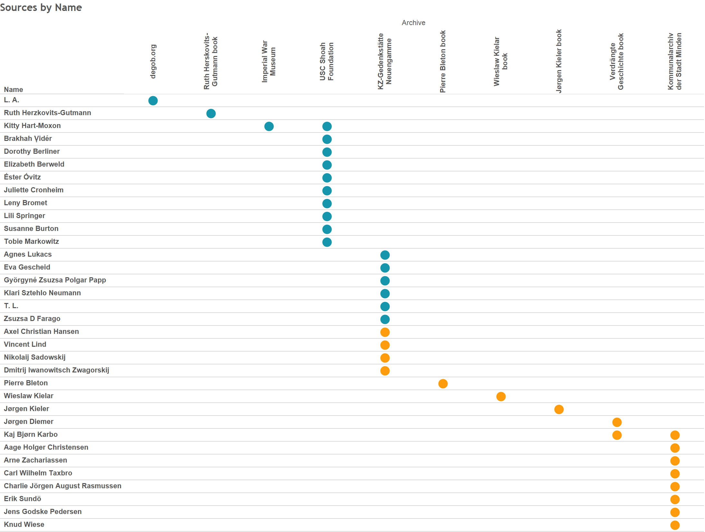
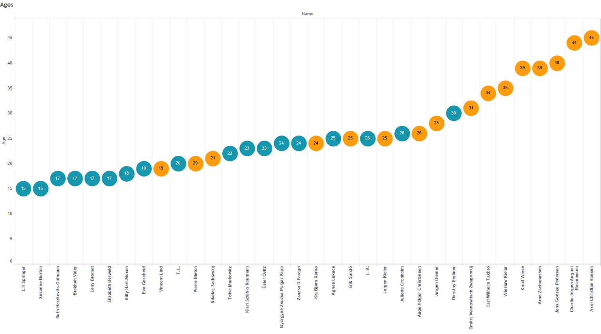
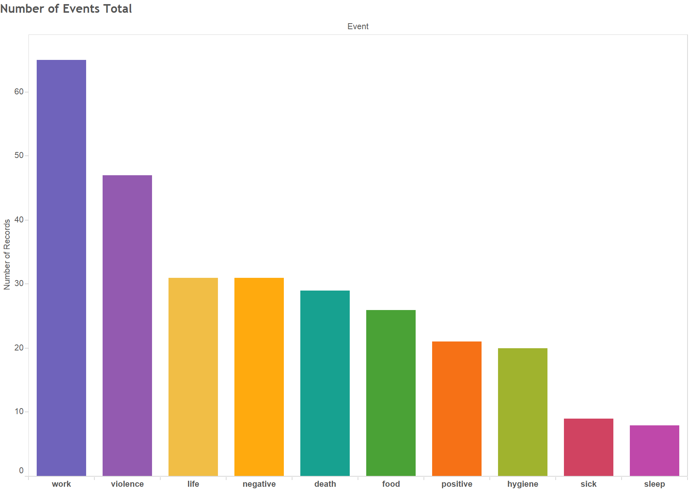
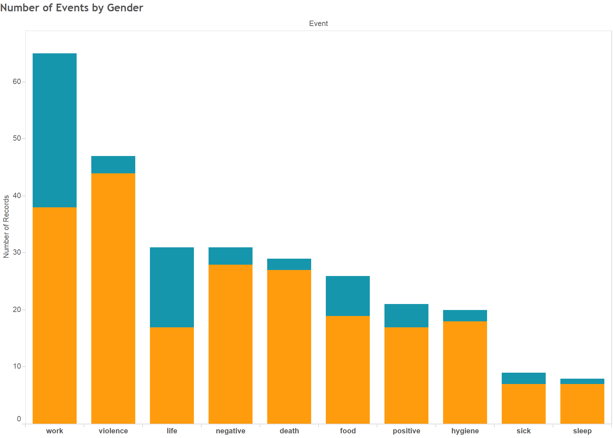
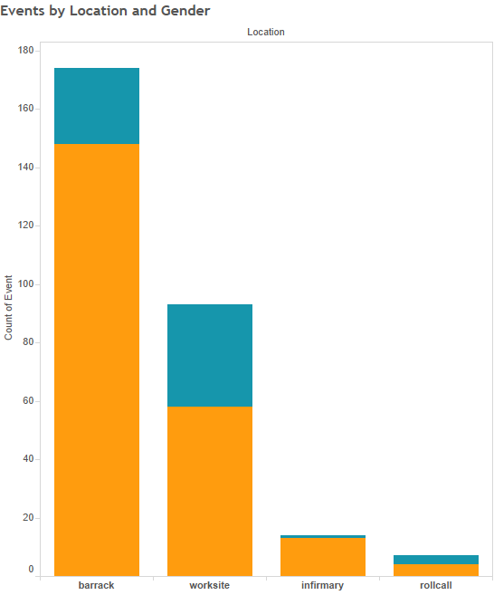
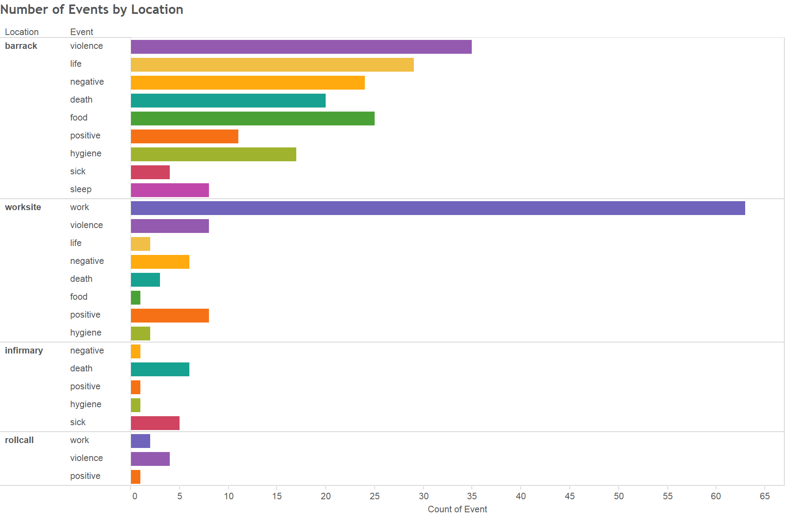
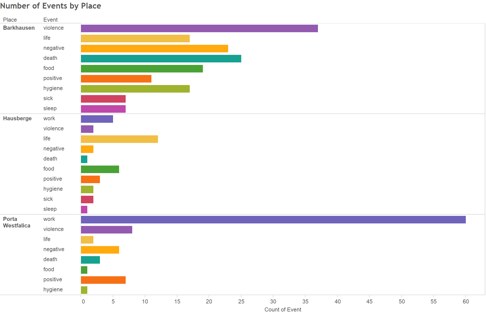
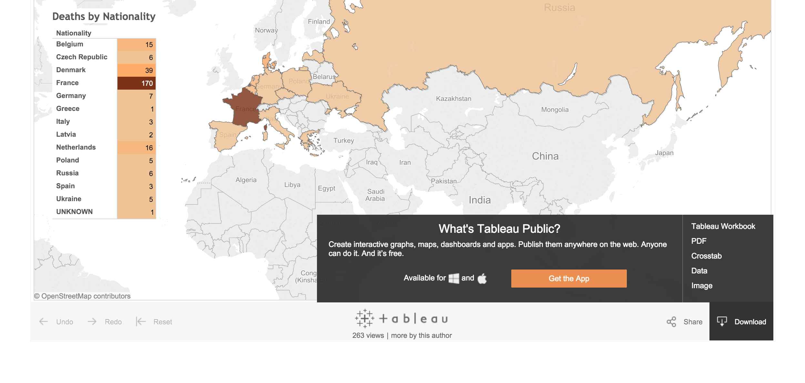

Chapter Five Events and Locations
This chapter analyzes the events and locations that are mentioned in accounts of thirty-four survivors of the Barkhausen and Hausberge camps, sixteen male and eighteen female. The original intent for using survivor accounts, besides providing detail in recounting the life of a forced laborer, was to map and analyze the use of spatial and temporal aspects of survivor accounts. It was hoped that the survivors would recall specific geographic details about their time in the camps, in order to map the events they recalled. Mapping the events was expected to show the location of acts of violence and places of death, as well as verifying the location of other events such as where labor took place and where meals were eaten. The question to be answered by such analysis was to quantify and verify the location of acts of violence and death. In reality, survivors did not provide many spatial aspects when recalling events, and when geographic elements where mentioned they were not very detailed. It was hoped that survivors would recount their specific location in the camp or worksite and any other surrounding geographical characteristics. Instead, the accounts are generally geographically bland, simply stating events in general terms and include no spatial surroundings. Surprisingly, the data showed a gendered division in the categories of events recounted by the male and female prisoners. Comparing events, location, and other characteristics of the accounts through the lens of gender became the focus of analyzation.
This chapter addresses the question of where acts of violence and death occurred by quantifying and analyzing the events described by survivors in interviews, reports and autobiographies. First, the chapter describes details about the survivors’ accounts, such as the type of records they left, the sources where the accounts are found, and the types of events used in this analysis. Next, the shortcomings of the data, and the limitations that they impose upon analyzing the data, are described. Finally, an analysis of the data describes where acts of violence, death, and other events happened, and the variance in the type of events described by female and male survivors.

[Figure 5-1. This chart depicts each survivor and the source where their account can be found.]
As Figure 5-1 shows, the accounts come in three general forms. First is a collection of twenty-one interviews of survivors given many years after the events took place. Ten of the interviews were conducted by scholars from the Archiv der KZ‑Gedenkstätte Neuengamme (Neuengamme Concentration Camp Memorial Archive, or KZ-Neuengame Archive), and took place in the 1990s. These interviews were conducted in the survivor’s native language, transcribed, and translated into German. Copies of the transcripts are located in the KZ-Neuengamme Archive. A further ten interviews were from the USC Shoah Foundation’s archive of interviews. These interviews were also conducted in the survivor’s native language, and are available as video recordings. Transcripts of these interviews are only available in the native language, so only German interviews were used in this study. One account is from the Imperial War Museum records. Interview accounts compose twenty-one of the thirty-four survivor accounts. Sixteen accounts are from female survivors, Kitty Hart-Moxon had interviews from the Imperial War Museum and USC Shoah Foundation, and four from male survivors.
The next most numerous group of accounts come from questionnaires completed by Danish survivors who were captured as political prisoners. The questionnaires were conducted by the Danish government at the request of the French government in the summer of 1947. With nearly 200 questions broken into ten groups, the questions related to transportation, daily life, work, the relationship between inmates, and the travel back to Denmark. Of particular interest to those conducting the survey was any information about especially brutal individuals. Space was also given for personal narrative accounts. All but one of these questionnaires come from the Kommunalarchiv Minden (Community Archive in Minden) and were translated from the original Dutch to German by Doris Borcherding in 2014 and 2015. The single anomaly is a questionnaire found in the KZ-Neuengamme Archive. Most of the responses to the questions are short, incomplete sentences, but many include a short written biographical sketch of their internment and journey back home after release was secured by Count Bernadette of the Swedish Red Cross in March 1945.
The third form of accounts comes from a mix of autobiographies and other book sources. Four books are used in gathering events, the autobiographies of Ruth Herskovits-Gutmann, Pierre Bleton, Wieslaw Kielar, and Jørgen Kieler. Accounts from Jørgen Diemer and Kaj Bjørn Karbo, who also has a questionnaire from the Kommunalarchiv Minden, are autobiographical excerpts from Verdrängte Geschichte: Verfolgung und Vernichtung in Ostwestfalen 1933-1945.1 In general, long form autobiographical accounts provide many more events than interviews and questionnaires.
Defining Events and Locations
Data gathering consisted of reading through each account and tracking the following points in a spreadsheet: name, date of birth, age, gender, nationality, classification of prisoner (Jew or political), camp, location in the camp or work site, event, latitude, longitude, total pages in the interview or book regardless if they mention the time at Porta Westfalica, the page number where the event is recounted, a summary of the text, citation of the source, and the archive where the source is located. Each row in the spreadsheet represents a single occurrence of an event. Events recorded in the spreadsheet were those that mentioned what type, quantity, and quality of food given to the prisoners, events that happened while working including a description of the work, events mentioning sleep, general life, hygiene, acts of violence, sickness, death, and positive and negative experiences. Limitations of choosing these events, especially vague terms like positive and negative experiences are discussed shortly.
In a very few cases events are recorded multiple times as when the event covers multiple categories. For example, a twenty-five-year-old Hungarian Jewess known only by the initials L.A., wrote “Everything went well in the beginning: we got blankets, bowls, spoons—the only thing missing was food.”2 This was recorded as a life event because she described camp life in general, and a food event because food and food items were specifically mentioned. Other times the main category is counted but not additional categories described in the same events. A recounting of a death in most cases, for example, was counted as a death, but not also as a negative event. Simple descriptions of events are negative by default (since the event occurs in a prison camp while enduring as a forced laborer) unless there is a discernible positive tone to the account. Positive and negative events are, admittedly, purely subjective, but the recounting of events do exhibit a positive or negative tone, sometimes signified by the words. Jens Godske Pedersen writes in his questionnaire that the relationship with civilians was good and that they took pity on the prisoners and showed them compassion.3 Arne Zachariassen, a thirty-nine-year-old Danish political prisoner, describes two prison officers, one a Kapo and the other the camp clerk, in very good terms. He praises their helpfulness, kindness, and compassion to him and other prisoners.4 Such positive recollections provide a needed contrast to the expected negativity of prisoner experiences and are categorized as positive events.
The process of recording events began by making a list of locations and events that were expected to be prevalent in the accounts. The initial list of locations included bathroom, barrack, roll call, worksite, and sickbay. The final list of locations and events included only barrack, roll call, worksite, and the term sickbay was changed to the more appropriate term infirmary. These locations were recounted repeatedly in the autobiographies, interviews and questionnaires. All events could be placed in these four general locations of a labor camp. Rarely did the survivor provide a more detailed location of an event. Jørgen Kieler seems to be an exception, as his autobiography contains much more detail than other accounts. Such is the case when he describes the practice of locking prisoners in the cold mortuary overnight without clothing or blankets as a form of punishment.5 In such cases, the mortuary is a particular location within the camp, but in the data the location is noted as barracks.
In most cases, determining an event was uncomplicated. For example, Eva Gescheid frankly described, “We possessed no shoes.”6 This statement described an aspect of life, so easily fit in the life event category. The location in this instance was less clear. If this was to mean that the prisoners had no shoes at all throughout their whole time in the Hausberge camp and adjacent worksite under the mountain, then this event could apply to all locations. Most instances of life events were assigned by default to the barracks location unless the prisoner specifically noted that the event occurred in a different location. In this example the location was placed in the barracks category. Similarly, events noting food, life and sleep events were placed in the barracks location unless an alternative location was specifically mentioned. Events were recorded when any of the events categories were mentioned.
Locations were more difficult to determine precisely, so the number of locations was limited to the four general locations already noted. In some instances the location was inferred. Charlie Jörgen August Rasmussen reported, “Incidentally, I can report that Hans abused prisoners daily.”7 The exact location is not given, but Hans was a foreman in the camp, so it might be inferred that these abuses occurred at the worksite. A previous event explained in the preceding sentence of the report, though, puts an instance of specific abuse, where Rasmussen is punched in the face by Hans, thereby losing his upper front teeth, in the barracks as they were in line waiting for food. We can probably surmise that Hans abused prisoners not only every day, but in every place. Since the preceding example put the act of violence in the barracks, then the report, “Hans abused prisoners daily,” is also recored as being located in the barracks. Rarely, though, exact and detailed locations are given, as when Jørgen Kieler describes where the words “HIC MORTUI VIVUNT” were written with coal on the white-washed wall in the yard of the Kaiserhof Hotel.8
Exposing Data Limitations
A number of limitations about the data should be addressed. First, the number of accounts used in the study was quite limited. Thirty-four is admittedly a small number compared to the 2,500 or so prisoners at the Hausberge and Barkhausen camps, and therefore all interpretations and conclusions are given in light of an acknowledged lack of representation. Nevertheless, the results that do come from the limited data are instructional and can, arguably, be reflective of a larger number of experiences at the camps. Representation was also lacking in the nationality of survivor accounts. Twelve of the male accounts were from Danish political prisoners, but Danish prisoners only accounted for 200 prisoners. Nearly 1000 prisoners were Soviet prisoners of war, and there were also more French and Polish prisoners than Danish. Unfortunately, accounts from survivors of other nationalities were unavailable for this study. Women prisoners were actually proportionally well represented in that fourteen accounts from women prisoners were Jewish women and girls from the eastern European countries like Hungary and Czechoslovakia. Exact numbers are not available, but most of the 1000 women in the Hausberge camp were east European Jewesses.
Second, a number of the accounts were taken from legal depositions or questionnaires where the intent was to show the brutality and inhumanity suffered at the camp. While these accounts may have a tendency to skew the resulting events towards the violent and negative, it can be rightly assumed that due to the nature of the camps the overwhelming experience would be that of violence, death and work. Third, the rubric as to what constituted an “event” and the category in which it belonged was inevitably inconsistent. Data was recorded over a period of several months and some human error of recording was unavoidable. Fourth, limiting the events to the prisoner’s time in Porta Westfalica severely truncated the experiences that were recorded. Generally, less than a third of the entire account was about the survivor’s time in the Porta Westfalica camp.
Another limitation was the date the interviews were given. While the Danish questionnaires were done in 1947, two years after the incident, the remaining oral interviews took place in the 1980s and 1990s after significant time and life changes had occurred. For instance, Jørgen Kieler, a Danish resistance fighter, later became a successful doctor. His recollection of events may be skewed towards medical incidents and a focus on death. As is always the case with memory, caution must be used in taking the accounts at face value. As historian Jan-Werner Müller puts it, “Historians cannot discount memory, but they cannot count on it either.”9
Lastly, the locations of the events were not specific enough to generate a unique latitude and longitude coordinate for each specific event. Locations were given one of five sets of coordinates that correspond to the Hotel Kaiserhof in Barkhausen (as the barracks, infirmary, roll call, 52.246267/8.911432), the tunnel entrance on Jakobsberg (as the worksite for Barkhausen, 52.245207/8.922229), the location of the Hausberge camp (as the barracks, infirmary, and roll call locations, 52.236875/8.950479), and the top of the Jakobsberg as the worksite for Hausberge. While latitude and longitude were recorded for this research, the data is not used in the analysis.
Manipulations, or changes, in the data were necessary in order to use the data programatically. In some cases an account gave the birthdate of a survivor only as a year or year and month. Where only a year was given, the birthdate was recorded as January 1. When only the year and month were available, the first day of the month was selected. The age of a prisoners was recorded as the age they were when they left Porta Westfalica. Some names were standardized when multiple versions existed. For example, multiple versions of one Danish political prisoner’s name occurred in different two different publications. Variations were Kaj Björn Karbo and Kai Biørn Karbo. Kaj Bjørn Karbo was chosen for various reasons, among which was that this version comes up with more correct results in a Google search.
Data Analysis
The initial research question for this analysis was “Where do acts of violence and deaths occur?” After organizing the data and making initial visualizations other questions arose. These questions are organized into two categories; questions about the prisoners, and questions about the events and locations. Questions about the prisoners included:
Why were female prisoners on average so much younger than the male prisoners? Much is known, reported, and remembered about the unhygienic living conditions, cruel treatment from SS guards, and dehumanizing existence that prisoners experienced, but were there any positive experiences as a forced laborer? Since the number of male and female interviews were roughly the same in number (18 female and 16 male), why do males have over three times as many events as female survivors? On which type of events did each gender put the most focus in their accounts? Why did males focus more on events in the barracks and women more on the work site? Why are more Danish reports available than other nationalities?
Although seemingly obvious after reading through numerous survivor accounts, it was not at all clear at the outset of this research where most of the acts of violence and deaths occurred in the camps and worksites. Quantifying the location of violent acts and instances of death was one of the major reasons for this part of the research. Other questions regarding the events and locations were: Why are most accounts of violent acts in the barracks rather than the worksite? What accounts for most deaths occurring in the barracks rather than the infirmary? Also of interest was determining which location had the most events and of which category of event. Answering this question also answers a similar question of which location did survivors focus on most, and a related question of which event category had the most instances, or which type of event did survivors focus on most of all?
Gender Focus

[Figure 5-2. Ages of prisoners range from 15 to 45.]
Prisoners at Porta Westfalica, at least those represented in this analysis, span thirty years, with the youngest at age fifteen, Lili Springer, and the oldest at age 45, Axel Christian Hansen. There were reports of younger girls, ages from fourteen to seventeen, who lived and worked in the Hammerwerke factory.10 The female prisoners in this data set were on average twenty-one years old; the males were on average thirty-one years old. Why the ten year difference? Why were female prisoners on average so much younger than the male prisoners? The discrepancy in age can mostly be attributed to the inadequate representation of male prisoners in the data set. As mentioned before, most of the 1000 female prisoners were Jewish girls and women from the Eastern European countries. Initially rounded up in their home town ghettos, these women were then sent to Auschwitz-Birkenau. While entering the camp, males and females alike were sorted by age and general health. Those deemed able to work were kept around, while others were selected for immediate or eventual death. Most of those classified as able to work were the young and relatively still healthy. As recounted by several of the women in this data set, while in Auschwitz, there was a general call for those who had worked at the United Lightbulb Factory in Ujpest, Hungary. Many women, believing treatment in a factory where their labor was desired would be much better than life in a concentration camp, volunteered for relocation to the labor camps. Therefore, many of the girls and women that ended up in the Porta Westfalica camp were young.
The ages of the men are not accurate representations of the larger group of men at the camp. The men in this data set were almost all Danish resistance fighters. While the age range for resistance fighters varied, many were college age or later. A more accurate survey of male ages could be concluded if numbers from the Soviet prisoners of war were included, since a large number of male prisoners at Porta Westfalica were Soviet prisoners. Speculation might conclude that the average age for men would decrease due to the many young Russian soldiers interned as prisoners of war.
Age played a role in prisoner relationships, regardless of gender and nationality. Jørgen Kieler wrote with great affection about Nikolaj Nikolajsen, a forty-four-year-old Danish political prisoner who acted as friend and father figure to any and all prisoners. Kieler wrote how Nikolajsen was always available to help his fellow prisoners of any nationality. “Anyone needing his help got it,” wrote Kieler, “and there was plenty of need for it down the mine.”11 Kieler was at his bedside on March 3, 1945, in the infirmary when Nikolajsen died from tuberculosis and hunger. “The Russian pharmacist came past and saw that I was sitting weeping. ‘Ist es dein Vater? (Is he your father?)’ he asked. I looked up at him and said, ‘Yes.’ Because although I had my own father, whom I loved and greatly respected, I did in truth feel that Nikolaj had been one for us all… One after the other, they came from all corners of the camp, men from Siberia, Hungary, France, the Netherlands, from all over Europe, and said farewell to their father.”12

[Figure 5-3. Number of incidents per event, combined male and female.]
Much is known, reported, and remembered about the unhygienic living conditions, cruel treatment from SS guards, and dehumanizing existence that prisoners experienced, but were there any positive experiences as a forced laborer? Was it even possible to have a positive experience in such a situation. Surprisingly, positive events come from several accounts, both male and female.
The Hungarian woman known only as L. A. described the work they performed in the underground factory, and that many of the women and girls had worked for the company in Eindhoven. “Most of the machines were made by Phillips which made people working with us quite happy.”13 Other positive experiences from the women came from Zsuzsa D. Farago who described “a beautiful landscape, a fantastical landscape” through which they walked every morning. “The surroundings were like in a story book.”14
Some positive experiences were quite simple. Jørgen Kieler remarks that he was able to share a bunk with his brother again.15 Vincent Lind told of a positive interaction with a Gestapo agent after having fallen asleep standing up in the tunnel. “I was asleep, I got used to sleeping while standing. I opened one eye and there in front of me stood a Gestapo. He was a Gestapo agent, there in the tunnel. He, so to say, had control over everything. With… leather… and such an ordinary hat, American style. Glasses. So, and he stood right in front of me. Directly I thought. “Well, this is the end!” because I fell asleep at Porta. And then he patted me on the head and said “Boy, boy!” and moved on.”16
The most surprising account of positive interactions comes from Arne Zachariassen, a thirty-nine-year-old political prisoner from Denmark. What makes Zachariassen’s report so unique, is that the questionnaires were intended to discover the most brutal officers and prisoners, yet Zachariassen makes a point to describe two men, a Kapo Fritz and the camp clerk Herrn Magnussen, with praise. Kapo Fritz was described as a man who did not lose his belief in human decency and integrity, despite being a prisoner himself. Of Herrn Magnussen it was said that he was a good and helpful friend to many prisoners.17

[Figure 5-4. Number of incidents per event, divided by gender.]
On which type of events did each gender put the most focus? Events that males focused on can be grouped into four areas. Acts of violence and work events had the most incidents with forty-four and thirty-eight respectively, followed by negative and death events with twenty-eight and twenty-seven respectively. A third group of events consisted of food, hygiene, positive and life events with nineteen, eighteen, seventeen, and seventeen respectively, and finally sick and sleep events with seven each. Unsurprisingly, males in this data set focus more on acts of violence and work events. Porta Westfalica was first and foremost a concentration camp, where order was established using fellow prisoners as enforcers. The most brutal and violent prisoners where chosen for these positions. Violence was a daily and ever present experience. Porta Westfalica was also a labor camp, and the men worked for twelve hours a day, every day but Christmas Day for nearly seven months. Many prisoners were literally worked to death. Hunger and starvation was something every prisoner was faced with. Daily calories were not half what they needed to be for inactive men, let alone for men doing physically demanding work. It is unsurprising that the third most talked about event was that of food, or more precisely, the lack of food. Similarly, the lack of hygiene, as noted by some men, attributed to the sense of loss of humanity, and was a daily and nightly struggle.
Females focus was entirely different from that of the male focus. The women survivors focused mainly on work events, twenty-seven, and life events, fourteen. The remainder of events were numbered in the single digits with seven food events, four positive events, and the rest with one or two instances. While at Porta Westfalica, women were focused on the work to be done, and were not subjected to as many acts of violence as were the men. After work, the women focused on what life was like and the lack of food.

[Figure 5-5. Number of incidents per event, divided by gender.]
Why did males focus more on events in the barracks and women more on the work site? Remembering that one of the main reasons for the interviews, questionnaires, and books was to recount the awful circumstances and events caused by Nazi Germany, it is understandable why most survivors recounted events that emphasized those terrible conditions. For the men, the most horrible experiences happened at the barracks. That is where countless beatings, deaths and disgusting living conditions existed. For the women, the work place was the worst place to be.
One question that has no answer from the data is why there are more Danish reports available than other nationalities? One possible answer has to do with how involved the respective national government was in recording witness accounts after the war. Both Denmark and France actively accounted for political prisoners, and made a concerted effort to record their witness after the war. That most of the men from Denmark and France were political prisoners rather than prisoners of war or other prisoner types, may have played a part in whether their country’s government cared to track and seek their experiences in writing. It was possible for the Danish government to prosecute Nazi officers and particularly violent prisoners, such as Kapo Schorsch, because the victims were civilians. It was probably much easier to discount a certain amount of violence to prisoners of war because they were soldiers and were not expected to be treated on the same level as civilians.
Present day interest to interview survivors seems also to be much higher in those countries neighboring Germany than in Russia and other places. Further research might indicate the efforts of nations to record survivor reports in the past few decades. It would be enlightening to see if there are more recorded events the closer a country is to Germany. Perhaps because Denmark and France border Germany, these governments and scholars felt a greater desire to record survivors’ experiences. The type of government post-war probably also influenced whether research was conducted. Denmark and France also had relatively stable governments after the war. Poland, the Czech Republic, and Hungary were Communist countries after the war, and their government was much more restrictive on the type of research, and even the rhetoric that was told about the war.
Location and Events
A second group of questions focus more explicitly around the locations and events recorded in the accounts.

[Figure 5-6. Number of events per location.]
Figure 5-6 shows the quantity of events for each type of event in each of the four locations. Most noticeable, and unsurprisingly, the worksite contains almost all of the work events. The roll call location contains two work events because the roll call was performed before and after the work shift, and were therefore associated with the work event. Generally events at the roll call location were recalling acts of violence, where Kapos would pick on and beat the prisoners. Zsusza Farago, though, told of a positive experience where the women in her group would help each other by huddling together during the roll call, which took place outside in frigid temperatures. Farago and her group would take turns standing on the outside of their huddle, keeping the weakest and coldest of the girls on the inside. All but nine of the survivors recounted at least one work event. Jørgen Diemer had the most event instances with twelve.
Another noticeable characteristic is that most other events are at the barracks location. The barracks location holds the highest number of violence, life, negative, death, food, positive, hygiene and sleep events. It would seem, according to this chart, that most survivors remembered events that happened in the barracks. Or said in other words, the most memorable events happened in the barracks. Not unexpected was that almost all of the food items were at the barracks location. Most of the meals were consumed in the barracks. One of the main questions was answered with this chart; why are most accounts of violent acts in the barracks rather than the worksite? Most of the acts of violence occurred in the barracks. Most of these acts of violence were perpetrated by the Kapos, who were to some extent exempt from work. When prisoners arrived back to camp from the worksite, they were incessantly and unmercifully accosted by the Kapos. Many male prisoners singled out Georg Knögl, nicknamed Schorsch, as the worst and most sadistic of all prisoners.
An unexpected result was that most deaths occurred in the barracks rather than the infirmary. One might assume that prisoners who were sick and near death would be taken to the infirmary where they would pass away. Many of those where beaten to death often did not make it to the infirmary and died where they were beaten, which was often in the barracks or the yard.

[Figure 5-7. Number of events by place.]
Figure 5-7 helps to answer the question of which location had the most events and of which category of event. Barkhausen, the men’s camp, had the most number of events over all, mainly because of the sheer number of events that the men contributed through their accounts. Work events were the most numerous, both among male and female survivors, leading Porta Westfalica to have the second largest number of events. Men focused more on Barkhausen, and women more on Hausberge. Overall survivors focused most on work events and acts of violence.
Conclusion
Studies show that a person’s memories are affected when they lose their vision, eventually leading to losing memories, “even well-rehearsed and well-consolidated childhood memories, are lost because the relevant visual information, which is a key part of the memory information, is lost.18” When vision is lost, the memories made with that vision erode until they are forgotten completely. New memories can and are made, but without the visual component. Often locations are perceived by visual cues. Directions to a location are often given with visual cues; turn left at the McDonalds and then right at the Walmart. People say that seeing something reminded them of an event, a location, a person, etc. Indeed, it seems that location and memory are connected, just as much as sight and memory. Location is important for human interaction and growth development. Being able to place ourselves in a location and being able to recall the location of things and events is also critical for our ability to remember. Psychologists Jodie Plumert and Alycia Hund write, “memory for location is a fundamental aspect of human functioning. Without the ability to remember locations, children and adults would be unable to carry out even basic tasks, such as getting ready for school or preparing a meal.19” Location and place are important for simple everyday function, like remembering where we put the keys to the car, or the last place where we laid down our cell phone.
Location can also serve as reminders of the past. Often locations become important visual and memorial cues to significant events. Memorials are physical locations to commemorate events. Grave sites are physical locations to remember loved ones. But how important are locations to memory? Do survivors use location to recall specific memories? In how much detail do survivors describe locations? This research has shown that survivors do not necessarily place emphasis on location when telling about an event.
Some survivors seem to put emphasis on the location where seemingly unimportant events occurred, like which town they travelled through on the way to a prison camp. Zsuzsa Farago a 24-year-old female Jew from Hungary, for example, could not remember the date when she left Auschwitz for a labor camp, but she did remember several details about the location. “I do not remember exactly anymore, I believe that we were transferred sometime in the fall. We were taken to Reichenbach. There was a telephone factory there. I believe that belongs to Czechoslovakia today, then there were Germans. Far away from the city there was a camp, and that’s where we were. And we worked in the factory there. We really had to work hard there.”20 While specific time aspects seem to fade more quickly than spatial aspects of memories, locating the place where something happened gives a sense of reality and “officialness” to the memory. The time of the event can never again be visited, but the location exists as a physical and everlasting example of proof.
At other times, the survivor’s grasp of the time was just as acute as their location. Eva Gescheid, a twenty year-old female Jew from Hungary, described her journey to Auschwitz and later to Porta Westfalica in detail. “We travelled for four days and nights, unspeakable suffering, because there were 70–80 people transported in closed cattle-cars. There was absolutely no water. After four days we came to Auschwitz… It was March, rain and snow showers raged. We possessed only one blanket each, which provided only a little protection. Six days and nights we traveled and suffered the torments of hell. Finally we reached Porta. We were unloaded and again left without food; this for two whole days.”21 Gescheid could recount the month and number of days for each leg of the trip from Auschwitz to Porta Westfalica, where Farago could not even recall the season.
For most of the survivors, it seems that describing or mentioning the location was a way to add detail to the specific story or event that was recalled. Location did not necessarily form them main locus of any accounts. While some survivors mention the location, others do not. This difference extended to how survivors felt about visiting Porta Westfalica and other concentration camps many years after the war. Some were very reluctant to visit the locations again. Györgyné Papp described how in the 1960s she went on a trip with her husband to Poland. While there, Papp’s husband wanted to visit Auschwitz. She did not want to go, but after a day of discussion was finally persuaded to visit. In remembering the visit she said, “I could have done without this trip. Because one is already trying to forget so many awful things. I never consciously tried to forget anything, but it is something else to live with these memories every day, one cannot live like that. And this visit in the sixties, was very unsettling.”22 For Papp, visiting the location brought back many terrible memories that had been unconsciously forgotten, in her attempt to continue on with life after the traumatic events during the war. Others felt that visiting the camp was necessary for overcoming the experience. Jørgen Kieler visited the Hotel Kaiserhof three times before finding a satisfactory resolution and reconciliation. Jørgen Kieler’s experience of visiting the Hotel Kaiserhof numerous times is told in more detail in the Conclusion of this report.

[Figure 5-8. Tableau Download Options.]
A brief description of the tools used in this research opens the methodology for review and critique and is, arguably, a necessary and important part of modern research. Many tools exist for creating charts out of tabulated data. The use of Tableau was intentional for the unique ability for the visualization and data to be presented to in a publicly accessible format through their website, or embedded in any HTML page. One of the most desirable aspects of this tool is that the data behind the visualization can easily be viewed. The Tableau website provides a way to download the visualization as an image, as a Tableau Workbook for use in the Tableau desktop application, as a PDF file, and download the raw data as a CSV file (see figure 5-8). Such availability allows scholars and interested individuals to check the research at a much deeper level than that provided by research in a static paper or book.
Herskovits-Gutmann, Auswanderung vorläufig nicht möglich., Kielar, Anus mundi., Kieler, Resistance Fighter., Meynert and Klönne, Verdrängte Geschichte.↩
A, “Recollections on the Holocaust - Protocol Nr. 3645,” 1.↩
Pedersen, “Fragebogen von Jens Godske Pedersen,” 4.↩
Zachariassen, “Auszug aus dem Fragebogen und Persönlicher Bericht von Arne Zachariassen,” 4–5.↩
Kieler, Resistance Fighter, 272.↩
Gescheid, “Protokoll von Eva Gescheid,” 2. “Schuhe beßasen wir keine.”↩
Rasmussen, “Bericht von Charlie Jörgen August Rasmussen.”↩
Kieler, Resistance Fighter, 261.↩
Müller, Memory and Power in Post-War Europe, 23.↩
A, “Recollections on the Holocaust - Protocol Nr. 3645,” 1.↩
Kieler, Resistance Fighter, 283.↩
Ibid., 293.↩
A, “Recollections on the Holocaust - Protocol Nr. 3645,” 1.↩
Farago, Gespräch mit Zsuzsa D Farago am 6.3.1992 in Budapest, 24.↩
Kieler, Resistance Fighter, 293.↩
Lind, Interview mit Vincent Lind 24./25.8.91 in Odense, 48.↩
Zachariassen, “Auszug aus dem Fragebogen und Persönlicher Bericht von Arne Zachariassen,” 4–5.↩
Rubin, “A Basic-Systems Approach to Autobiographical Memory,” 80.↩
Plumert and Hund, “The Development of Memory for Location,” 370.↩
Farago, Gespräch mit Zsuzsa D Farago am 6.3.1992 in Budapest, 12.↩
Gescheid, “Protokoll von Eva Gescheid,” 2.↩
Papp, Gespräch mit Györgyné (Zsuzsa) Papp am 10.3.1992 in Budapest, 52.↩
Last edited on 04 Mar 2016